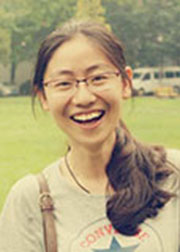

用奋斗，书写最极致的青春
尊敬的各位老师，同学们：
大家好。我叫于淼，是教育学部2009级心理学专业的一名本科生。曾任教育学部第三十七届学生会主席。获宝钢教育基金优秀学生特等奖、国家奖学金、五四“优秀团干部”等，并连续两次入选“优秀学生党员百人团队”，专业总成绩排名第一，现已保送至北京师范大学心理学院基础心理学方向攻读硕士学位。今天，我汇报的题目是“用奋斗，书写最极致的青春”。
黄沙百战穿金甲，不破楼兰终不还
大家好。我叫于淼，是教育学部2009级心理学专业的一名本科生。曾任教育学部第三十七届学生会主席。获宝钢教育基金优秀学生特等奖、国家奖学金、五四“优秀团干部”等，并连续两次入选“优秀学生党员百人团队”，专业总成绩排名第一，现已保送至北京师范大学心理学院基础心理学方向攻读硕士学位。今天，我汇报的题目是“用奋斗，书写最极致的青春”。
黄沙百战穿金甲，不破楼兰终不还
从零九年秋天步入东北师范大学的那一刻起，我便已经下定决心，要为这段青春留下一些能让自己再回首时热泪盈眶的日子。在认真地了解了自己所学的专业后，我下定决心读研深造，一定要在心理学这条路上坚实地走好每一步。那个时候懵懵懂懂稚嫩地张望着田家炳楼下贴着的奖学金名单，内心无尽的向往，希望能够和那些优秀的人一样。怀揣梦想，一个平凡毫不起眼的女孩，伴随着羡慕的同时，那份梦想的炙热也慢慢升温，在心中不停地念着：生命不息，奋斗不止。
当步入大学后，渐渐地发现，在大学中除了老师的指导外，能够给予你更多帮助的是朋辈之间的鼓励与支持。直到现在我依旧感念我大学生活中遇到的对我影响深远的师兄师姐们，从他们那里我了解到深造的路并不好走，科研思路是要一点点的培养的。于是从大一开始，搞实践，做科研。在制定了详细的科研计划后，在寒冬跑遍每一个公共课堂上分发调查问卷，深夜蜷缩在床上撰写调查论文。这些研究的经历虽然不足为道，但正是在这些点滴中，我积累了属于自己的科研经验，形成了自己的科研风格，在培养严谨治学态度的同时，产生了更加强烈的研究旨趣，更加坚定了自己未来的方向，这俨然成为我大学里最为珍贵的记忆。
我撰写的《青少年反社会行为的影响因素与对策》等三篇文章分别发表于国家级、北大核心与省级核心刊物上并获得了科研奖励基金，参与了多个科研项目，获得了优秀科研项目与科研团队等多项奖励。同时还参与编著了《西方心理学史》的电子教材、协助省委组织部对知识胜任力的研究等等。也许，每一项科研与实践的结束不以言表的是内心的喜悦，但我深深知道，这些成功的背后需要多大的付出，正是那些泪水与汗水，换来的才是现在的欢笑。追寻每一个幸福的瞬间，支撑着我的梦想继续前行。
不是一番寒彻骨 ，怎得梅花扑鼻香
在担任心理班班长期间，每天晚上都会在同学睡前走一遍寝室，直到同学全部归寝后才安心睡去。在成功当选了教育学部学生会主席后，第一次带队伍，深知那是怎样一个巨大的挑战，可我从未畏惧过。因为我相信只要坚持下去，就一定会看到灿烂的明天。在近两个月的磨合与沟通后，每个活动详细策划精心准备，在全体同学的共同努力下，团委老师的指导与帮助下，教科院学生会举办了多次大型活动，并在东北师范大学校运动会中夺下了连续的第七顶桂冠。
在大学里，凡是做过学生工作的同学可能都深有体会，究竟如何协调工作与学习间的平衡，一直是困扰学生干部的难题。我也曾迷茫过，也曾纠结过。在最忙的时候，我抓住一切可以利用的时间，制定的学习计划永远不会因为心情受到影响，清晨的静湖旁，周末的图书馆，夜晚的自习室，午休的课桌前。在我的日程表里，几乎没有星期天，我贪过黑熬过夜，最晚的时候也有到过凌晨三点，五盏充电台灯支撑我学习整晚，然后依旧六点半起床背一个小时的英文单词。学生工作永远不能成为你成绩下滑的理由，如果你还在抱怨学生工作耽误了你的学习时间，只能证明你对成功还不够渴望，如果你像渴望呼吸一样渴望成功，废寝忘食的做一件事情，如果这件事情还没有成功，就证明时间还没到，你的努力还不够。
面对误解，始终报以微笑，用接纳与宽容迎接崭新的明天；面对困难，始终以不屈服与顽强的心态对待，用行动回以漂亮的答案。
千淘万漉虽辛苦，吹尽黄沙始到金
大三下学期，通过查阅大量信息，在与导师和学姐们进行了多次沟通后，了解到心理专业的学生可以通过夏令营优先录取，于是开始了漫长而又冗杂的准备过程。当同时收到北京师范大学，中科院和中国人民大学三所学校的夏令营录取通知时，我对自己的决定又坚定了几分。在夏令营中有很多的机会，能够真正的去接近心理学界的学术泰斗，这让我为之荣幸的同时，又心怀紧张。通过几轮考核，虽然，最后被一位北京师范大学的教授选中，但由于他的研究方向与我喜欢的方向有差异，于是我放弃了夏令营的优先录取资格，投身到与北师大学生一起参加外保面试的激烈竞争中。在准备保送面试的那段时间里，总觉得要做的事情很多，要读的书很多，直到那时候才发觉，原来我的青春里面最多的竟然是教科书而不是新思想，于是开始触碰曾经不曾触碰过的一本本学术专著与一篇篇外文文献，绝不打没有准备的仗，既然准备了就要打的漂亮。充分的准备了考试的各项内容，每天抱着电脑窝在图书馆里，每一次搞定一个问题的时候，欣喜便用上了心头。经过综合笔试与专业面试，最终在一百四十多人的竞争中，以第三名的成绩成功录取。
经历了大学的洗礼后，我似乎开始明白原来理想的路，还要走很久，但正是这颗为理想顽强奋斗的心与不屈的强大意志，带给我的是无尽的追寻与幸福。过去的遗憾或失败，并不代表未来，也不能决定未来。我知道奋斗一事，永远都不晚。只要下定决心鼓起勇气去追求，那么，每个人都有相同的实现梦想的机会！
如今，已经保送至北京师范大学的我依旧下定决心，继续深造，完成我成为一名大学教师的梦想，希望能够给更多也曾像我一样的大学生们带去正能量。我始终坚信：人，只要有梦想，就是快乐的，只要敢于追逐梦想，就是幸福的，只要执着于梦想，就是成功的！每一个人都是平凡人，但我们要做一个有梦想的平凡人！用我们奋斗的笔，书写出我们最极致的青春！
谢谢大家！
当步入大学后，渐渐地发现，在大学中除了老师的指导外，能够给予你更多帮助的是朋辈之间的鼓励与支持。直到现在我依旧感念我大学生活中遇到的对我影响深远的师兄师姐们，从他们那里我了解到深造的路并不好走，科研思路是要一点点的培养的。于是从大一开始，搞实践，做科研。在制定了详细的科研计划后，在寒冬跑遍每一个公共课堂上分发调查问卷，深夜蜷缩在床上撰写调查论文。这些研究的经历虽然不足为道，但正是在这些点滴中，我积累了属于自己的科研经验，形成了自己的科研风格，在培养严谨治学态度的同时，产生了更加强烈的研究旨趣，更加坚定了自己未来的方向，这俨然成为我大学里最为珍贵的记忆。
我撰写的《青少年反社会行为的影响因素与对策》等三篇文章分别发表于国家级、北大核心与省级核心刊物上并获得了科研奖励基金，参与了多个科研项目，获得了优秀科研项目与科研团队等多项奖励。同时还参与编著了《西方心理学史》的电子教材、协助省委组织部对知识胜任力的研究等等。也许，每一项科研与实践的结束不以言表的是内心的喜悦，但我深深知道，这些成功的背后需要多大的付出，正是那些泪水与汗水，换来的才是现在的欢笑。追寻每一个幸福的瞬间，支撑着我的梦想继续前行。
不是一番寒彻骨 ，怎得梅花扑鼻香
在担任心理班班长期间，每天晚上都会在同学睡前走一遍寝室，直到同学全部归寝后才安心睡去。在成功当选了教育学部学生会主席后，第一次带队伍，深知那是怎样一个巨大的挑战，可我从未畏惧过。因为我相信只要坚持下去，就一定会看到灿烂的明天。在近两个月的磨合与沟通后，每个活动详细策划精心准备，在全体同学的共同努力下，团委老师的指导与帮助下，教科院学生会举办了多次大型活动，并在东北师范大学校运动会中夺下了连续的第七顶桂冠。
在大学里，凡是做过学生工作的同学可能都深有体会，究竟如何协调工作与学习间的平衡，一直是困扰学生干部的难题。我也曾迷茫过，也曾纠结过。在最忙的时候，我抓住一切可以利用的时间，制定的学习计划永远不会因为心情受到影响，清晨的静湖旁，周末的图书馆，夜晚的自习室，午休的课桌前。在我的日程表里，几乎没有星期天，我贪过黑熬过夜，最晚的时候也有到过凌晨三点，五盏充电台灯支撑我学习整晚，然后依旧六点半起床背一个小时的英文单词。学生工作永远不能成为你成绩下滑的理由，如果你还在抱怨学生工作耽误了你的学习时间，只能证明你对成功还不够渴望，如果你像渴望呼吸一样渴望成功，废寝忘食的做一件事情，如果这件事情还没有成功，就证明时间还没到，你的努力还不够。
面对误解，始终报以微笑，用接纳与宽容迎接崭新的明天；面对困难，始终以不屈服与顽强的心态对待，用行动回以漂亮的答案。
千淘万漉虽辛苦，吹尽黄沙始到金
大三下学期，通过查阅大量信息，在与导师和学姐们进行了多次沟通后，了解到心理专业的学生可以通过夏令营优先录取，于是开始了漫长而又冗杂的准备过程。当同时收到北京师范大学，中科院和中国人民大学三所学校的夏令营录取通知时，我对自己的决定又坚定了几分。在夏令营中有很多的机会，能够真正的去接近心理学界的学术泰斗，这让我为之荣幸的同时，又心怀紧张。通过几轮考核，虽然，最后被一位北京师范大学的教授选中，但由于他的研究方向与我喜欢的方向有差异，于是我放弃了夏令营的优先录取资格，投身到与北师大学生一起参加外保面试的激烈竞争中。在准备保送面试的那段时间里，总觉得要做的事情很多，要读的书很多，直到那时候才发觉，原来我的青春里面最多的竟然是教科书而不是新思想，于是开始触碰曾经不曾触碰过的一本本学术专著与一篇篇外文文献，绝不打没有准备的仗，既然准备了就要打的漂亮。充分的准备了考试的各项内容，每天抱着电脑窝在图书馆里，每一次搞定一个问题的时候，欣喜便用上了心头。经过综合笔试与专业面试，最终在一百四十多人的竞争中，以第三名的成绩成功录取。
经历了大学的洗礼后，我似乎开始明白原来理想的路，还要走很久，但正是这颗为理想顽强奋斗的心与不屈的强大意志，带给我的是无尽的追寻与幸福。过去的遗憾或失败，并不代表未来，也不能决定未来。我知道奋斗一事，永远都不晚。只要下定决心鼓起勇气去追求，那么，每个人都有相同的实现梦想的机会！
如今，已经保送至北京师范大学的我依旧下定决心，继续深造，完成我成为一名大学教师的梦想，希望能够给更多也曾像我一样的大学生们带去正能量。我始终坚信：人，只要有梦想，就是快乐的，只要敢于追逐梦想，就是幸福的，只要执着于梦想，就是成功的！每一个人都是平凡人，但我们要做一个有梦想的平凡人！用我们奋斗的笔，书写出我们最极致的青春！
谢谢大家！